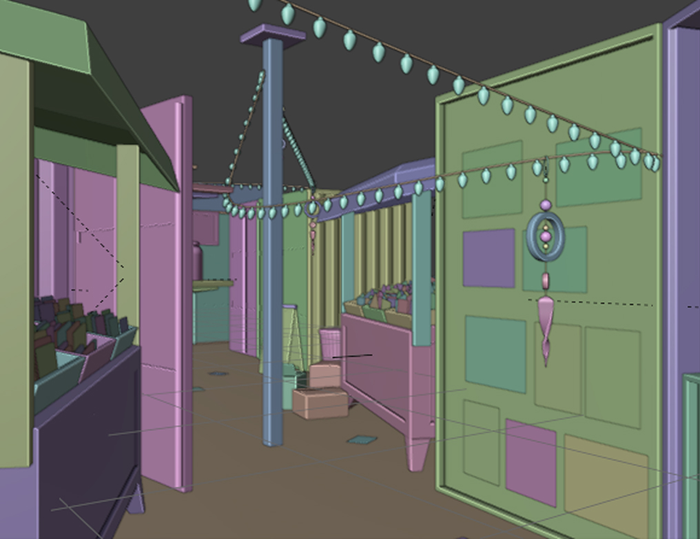
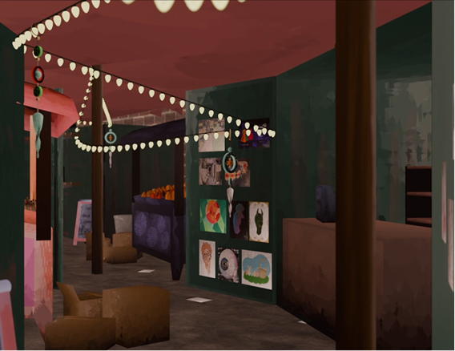
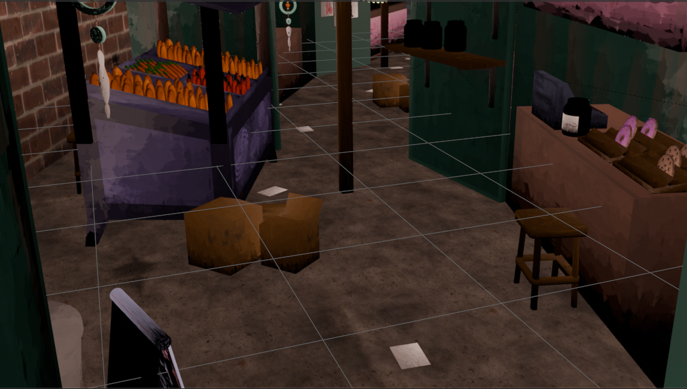
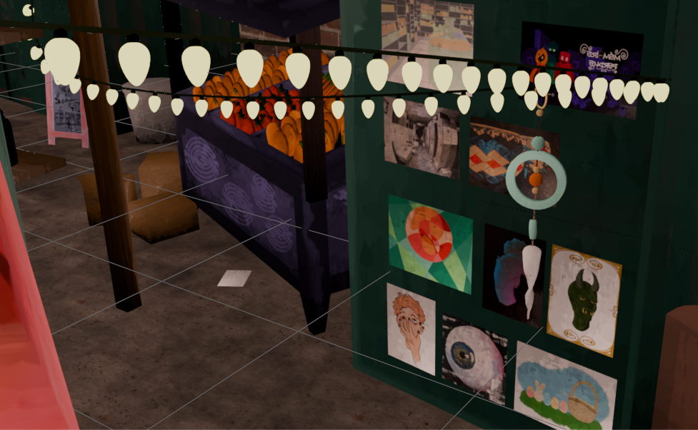
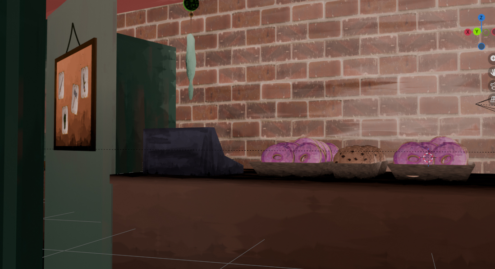

Retour aux projets
Le marché
Modélisation 3D

Modélisation 3D
Ce projet a été concus pour le cours d'animation multimédia. Le thème était libre mais nous devions suivre le modèle avec le mouvement de la caméra afin de faire une boucle infinie.
J’ai fait la modélisation 3D, le texturage et les oeuvres placées dans le marché. Les crédits de la texture de la brique ainsi que du sol revient à ambiant CG
Aucune intelligence artificielle n’a été utilisée pour ce projet.
1.
La première étape a été de créer l'idée du marché et de faire un sketch pour concrétiser le tout.
2.
J'ai trouvé les idées pour les divers assets du marché et ce qui pourrait le décorer comme les containers et les accessoires.
3.
Une fois tous les modèles créés, j'ai assemblé la scène dans le corridor représenté dans le projet. J'ai aussi ajouté les murs et le plafond.
4.
Une fois la scène créée, j'ai commencé à ajouter la textures en dessinant les modèles en ayant besoin et en ajoutant des nodes pour créer une texture plus dessinée.
5.
J'ai ajouté de la lumière et un peu d'animation et j'ai créé le render. Après, j'ai commencé le montage vidéo sur davinci resolve et j'ai ajouté le son pour créer l'ambiance.









Ce projet m'a permis de créer un monde de toutes pièces et d'explorer différentes techniques de modélisations et de texturages.